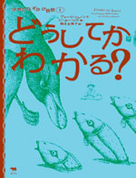
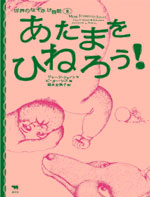
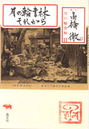
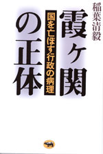
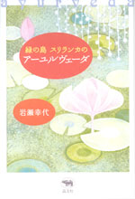
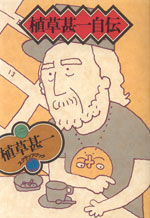
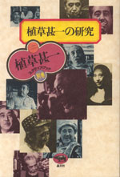

 |
絵本 |
|
世界のなぞかけ昔話１ どうしてかわかる？ |
|
| ジョージ・シャノン=文 ピーター・シス=絵 福本友美子訳 | |
| B5変型判 56頁 | |
| 定価1575円（本体1500円） | |
| 4-7949-2655-3 C8398 | |
| 少年のお金を盗んだのは誰？ 部屋いっぱいにある造花のなかから本物を見分けるには？世界各地に伝わる愉快な昔話14編。どの話にも頭をひとひねりしなければ解けない謎かけがある。わからなくても、お話の最後に答えがあるから安心して！ 知恵と常識、文章の細部を読む洞察力のきたえられる絵本。全編をピーター･シスのイラストが覆う。 |
 |
絵本 |
| 世界のなぞかけ昔話2 あたまをひねろう！ |
|
| ジョージ・シャノン=文 ピーター・シス=絵 福本友美子訳 | |
| B5変型判 64頁 | |
| 定価1575円（本体1500円） | |
| 4-7949-2656-1 C8398 | |
| 一匹のホタルが百匹の猿と闘って勝つには？ お坊さんはどうやって雄鶏で泥棒をつかまえた？ あらゆる年代の読者をひきこんだ『どうしてかわかる？』の続編。さらに15の独創的な謎かけ昔話を世界各地から集めました。たくさんのおかしな体験がこの本にはつまっている！ なぞなぞ好きも昔話好きも大満足。イラストはピーター･シス。 |
 |
読書・ノンフィクション |
| 月の輪書林それから | |
| 高橋徹 | |
| 四六判 304頁 | |
| 定価2310円（本体2200円 ） | |
| 4-7949-6685-7 C0095 | |
| 古本ブームのきっかけとなった『古本屋 月の輪書林』。著者が七年ぶりに帰ってくる。この間に作った目録は四冊。目録も著者も著しい成長を見せている。今回は「満州」という国を古本と消えた人々で再構成、さらに明治にタイムスリップして一人の風雅な男・三田平凡寺の世界を鮮やかに描く。同時に一人で学ぶ楽しさ、喜びをも伝えてくれる。 |
 |
政治･行政 |
| 霞ヶ関の正体 国を亡ぼす行政の病理 |
|
| 稲葉清毅 | |
| 四六判 280頁 | |
| 定価1995円（本体1900円） | |
| 4-7949-6686-5 C0031 | |
| 崩壊寸前の年金制度。厖大な浪費をかさねる公共事業。国民のニーズとかけはなれた教育･医療･福祉。このまま放置すれば大増税時代の到来はまぬがれない。長年、霞ケ関の中枢で行政改革にたずさわり、お役人の生態を知りつくした著者が、その病理をエピソードをまじえてわかりやすく分析し、その克服のために類書にない提言をおこなう。 |
 |
美容･旅 |
| 緑の島 スリランカのアーユルヴェーダ | |
| 岩瀬幸代 | |
| 四六 判 256頁 | |
| 定価1995円（本体 1900円） | |
| 4-7949-6687-3 C0077 | |
| アーユルヴェーダとは、ハーブや油など自然の力を借りて、体と心の健康を維持しようとする伝統医学。発祥はインドであるが、原型はむしろスリランカにのこる。肥満、糖尿病など、問題を抱えた人が欧米からは数多く訪れている。旅行ライターの岩瀬さんはリゾートホテルでアーユルヴェーダと出会い、とりことなった。体当たりの取材で、その魅力を紹介。 |
 |
美術 |
| RAW COMMUNICATION 若野桂作品集 |
|
| 若野桂 | |
| B5判 128頁 | |
| 定価3675円（本体 3500円） | |
| 4-7949-6680-6 C0071 | |
| 村上隆や奈良美智といった邦人アーティストの海外進出が目覚ましいが、若野桂もそこに肩を並べるアーティストだ。本書では、世界的に評価されたNIKEのキャンペーンやSONY/AIBOのデザインをはじめ、独特の曲線で描かれた若野桂ならではのデジタル･グラフィックを集大成。日本のアート･シーンを振り返る際、必備となる一冊。 |
 |
エッセイ |
| 植草甚一スクラップ・ブック 40巻 第14回配本 植草甚一自伝 |
|
| 植草甚一 | |
| 四六判 192頁 | |
| 定価1470円（本体1400円） | |
| 4-7949-2600-6 C0395 | |
| ぼくは下町の不良だった──つねに新しいことに興味を持ち、過去を振り返るのは年寄りの証拠というJ･J氏も、読者の強い期待に答えて、子供時代のことを書かないではすまされなくなった。甚一少年の青春を育んだ下町の情緒を伝える、自伝抄を一冊にする。（解説･鈴木志郎康） |
 |
エッセイ |
| 植草甚一スクラップ・ブック 別巻 第14回配本 植草甚一の研究 |
|
| 植草甚一 | |
| 四六判 272頁 | |
| 定価1470円（本体1400円） | |
| 4-7949-2601-4 C0395 | |
| J･J氏はぼくたちに何を遺したのか？ ニューヨーク･シティ･マラソンからシャネルの遺品オークションまで、お得意の雑学がたっぷりつまった単行本未収録のエッセイ（「植草甚一らんだむのーと」ほか）。後半は、八編の書き下ろし植草甚一研究で、広大無比な知識の持ち主だったJ･J氏の魅力を探る。 |